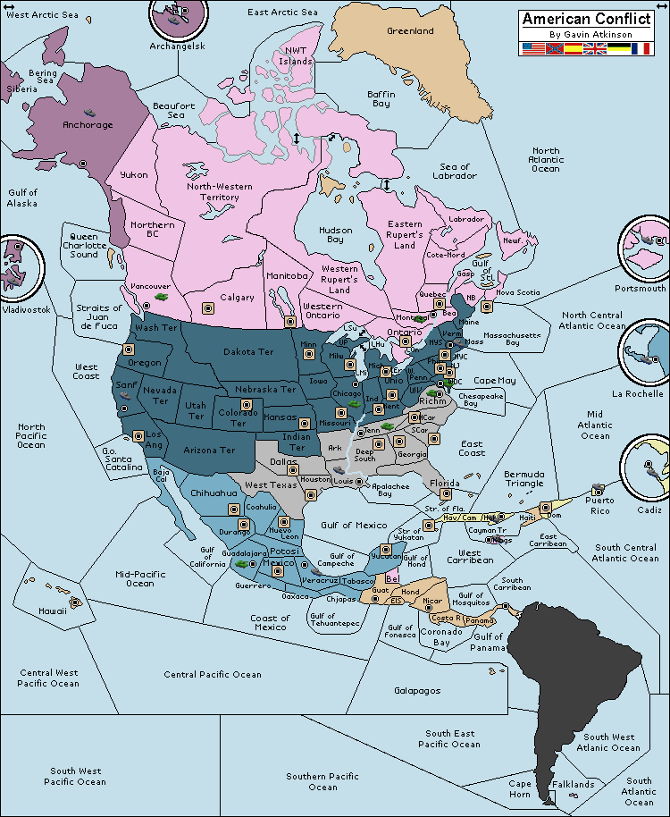
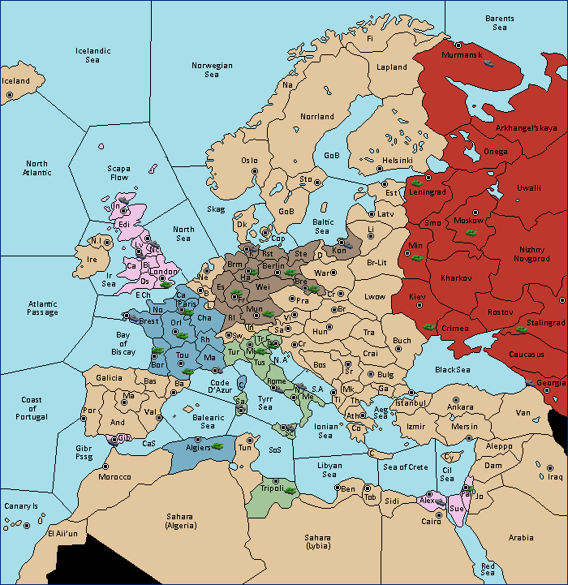
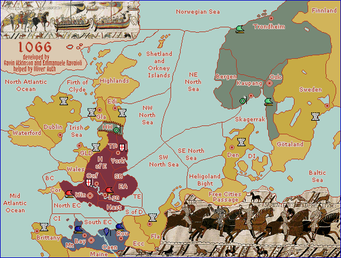

Diplomacy
   To view the diplomacy rules click <a href="diplomacyRules.pdf">here</a>.<br>
   Here are some concepts that diplomacy uses: 
  <h2>Diplomacy Concepts</h2>
  <ul>
     <li><a href="http://paulware.github.io/piPair/nearestCity.html">Find the nearest town to your mouse position</a></li>
     <li><a href="http://paulware.github.io/piPair/lists.html">Lists/Dictionary</a></li>
     <li><a href="http://paulware.github.io/piPair/showImage.html">Use pygame to display an image</a></li>
     <li><a href="http://paulware.github.io/piPair/drawFlag.html">Draw a capture flag at a location</a></li>
  </ul>
  
  <h2>Variants</h2>
  
  <p>
  
  <p>
  
  <p>
  There are quite a few more <a href="https://vdiplomacy.com/variants.php">variants here.</a>
  
  